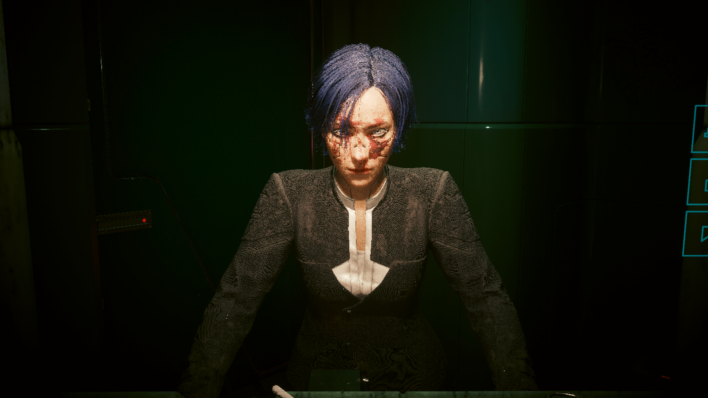

纯网络黑客
以快速破解为主要输出，利用 RAM 和摄像头控制战场，在进入房间前就完成第一轮清场。
智力 20镇定 20技术 20
没有一条流派能解决所有问题。找到最像你的那一种，再用它把夜之城的规则改写一遍。

前期优先把属性点投入到一个明确方向，装备围绕战斗循环选择。不要急着把每一项都点满，真正的强大来自一套能够重复执行的节奏。
潜入、破解、冲刺、正面火力都能通往同一条街。只要构筑让你的选择更快、更准，它就是适合你的流派。
跳转构筑清单它们不是固定答案，而是六种不同的战斗语言。可以从一条主线开始，再向其他方向混合。
以快速破解为主要输出，利用 RAM 和摄像头控制战场，在进入房间前就完成第一轮清场。
武士刀、Sandevistan、冲刺和空中位移。切入、斩击、离场，整套循环像一段压缩过的时间。
消音手枪配合光学迷彩，先让敌人失去视线，再让每一次爆头成为下一次隐身的起点。
大猩猩手臂和狂暴操作系统把生存变成输出。正面进入，承受伤害，再用近距离力量结束冲突。
科技霰弹枪与连锁效果把掩体变成临时目标。适合喜欢一次处理多个问题的人。
让智能武器接管瞄准，同时用快速破解削弱敌方防御。你只需要判断位置，然后扣下扳机。
Your build.
Your rules.
攻略的价值不是告诉你唯一正确的路线，而是帮你更快找到那种让你愿意继续走下去的节奏。
回到游戏系统